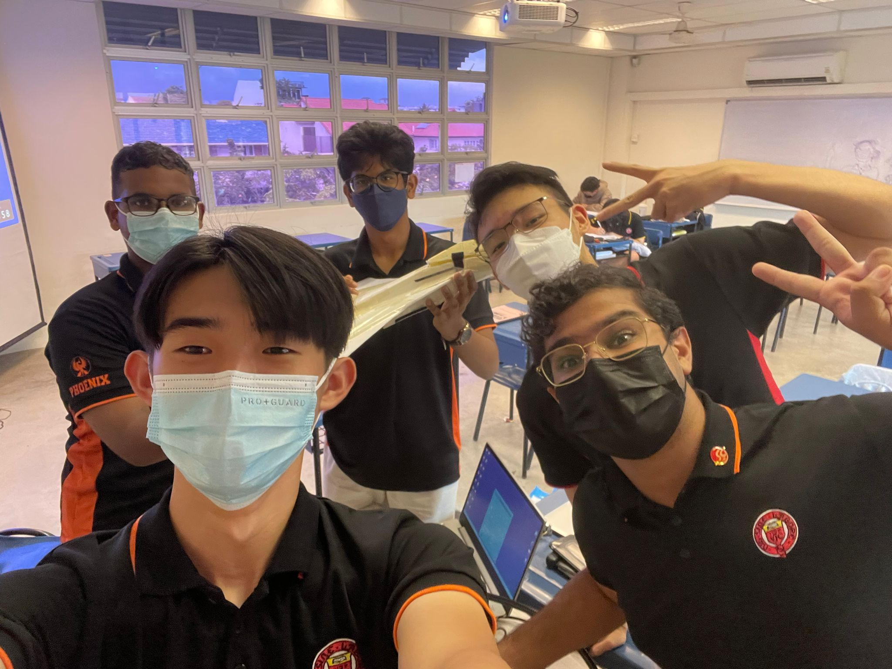
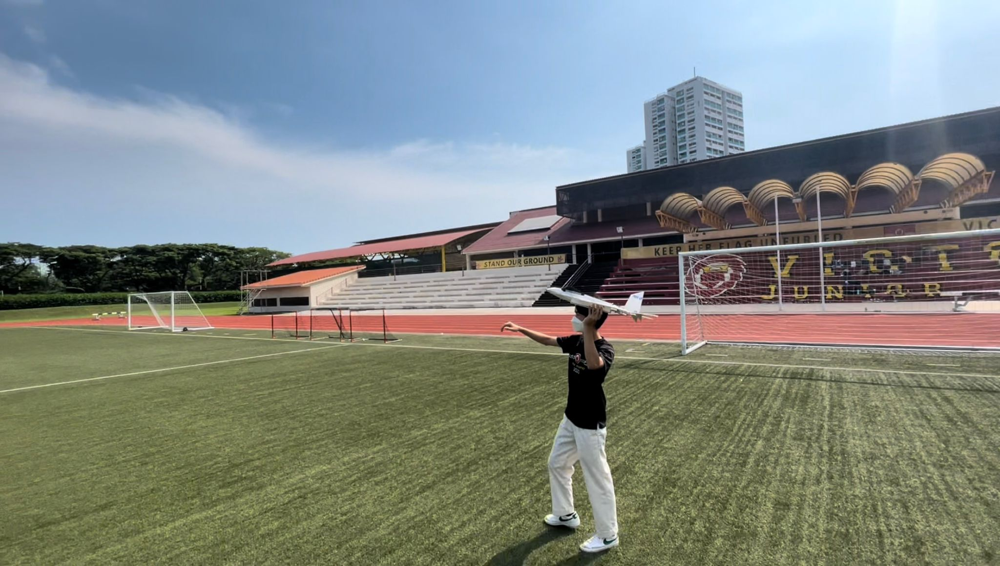
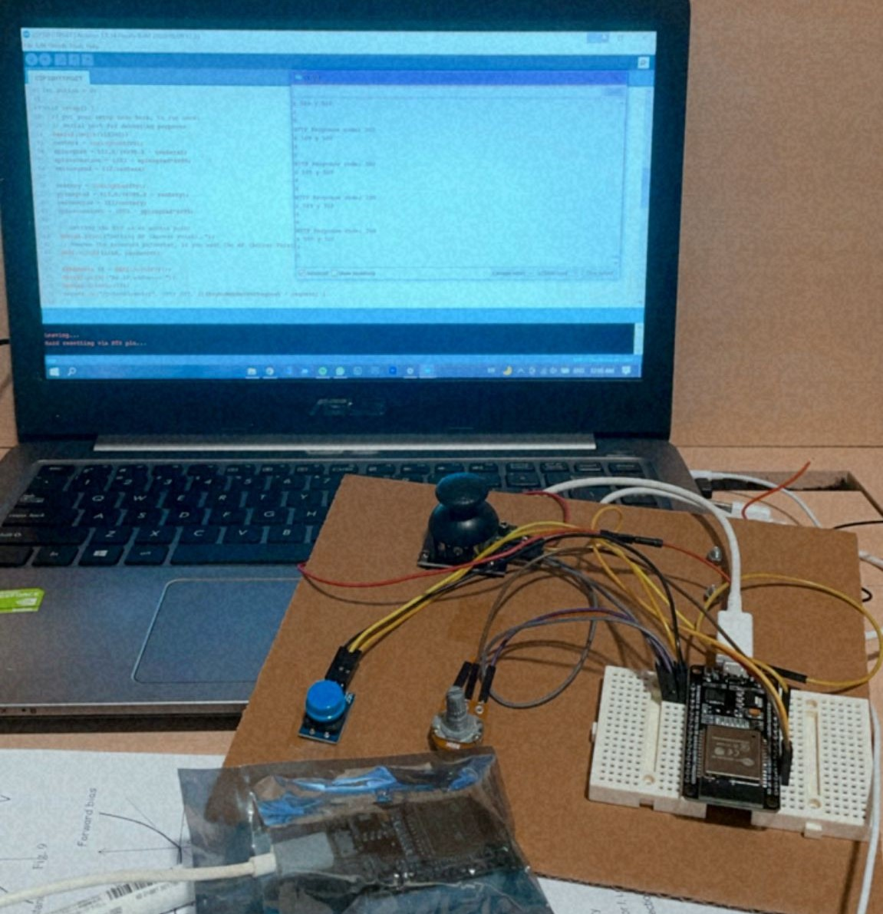
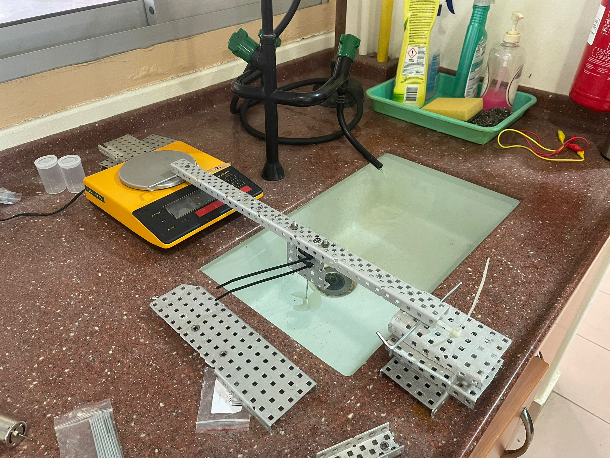
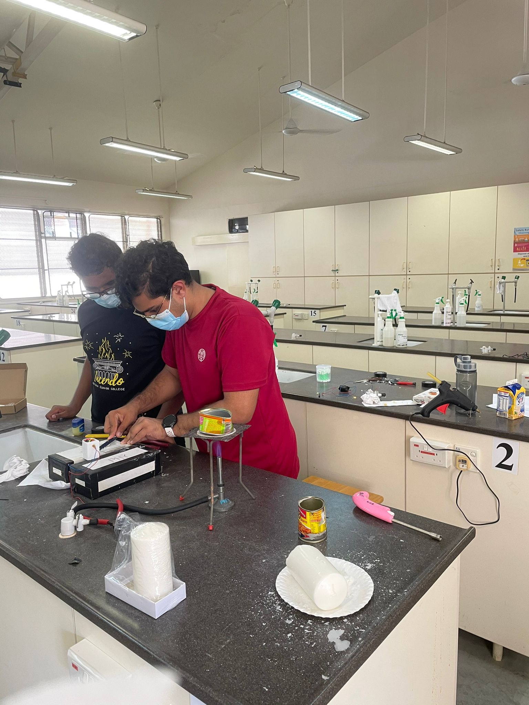

The ocean trash cleanup device is aimed at removing buoyant & surface trash. It works by using
a pressure gradient generated by a 9V water pump. This helps pull less dense objects into a
bin, for future disposal. It works as a stationary bin attached to harbours and piers or if possible,
can be used as attachments on boats.
This is a prototype built with recyclable materials.
Features:
Current drawing pump which pulls buoyant trash into the bin
Rotatable lid which allow for the opening and closing of the bin
LED screen displaying the status of the bin (Operational/Full)
Ever used Google Home to turn on the lights? Well... what if we made our own?
Introducing, the automated lights and attendance system! This IoT device detects entry and exit
through PIR sensors, logging the data onto the ThingSpeak IoT platform. A telegram message will thus be sent
to the user through IFTTT indicating whether a person has entered or left the room, and the total number of people in the room.
Features:
Automated lights
Automatically turn on when people enter the room
Attendance system
Able to record the number of people in the room at a specific time!
Able to record the number of people in the room at a specific time!
Can view the number of people in the room in real time!
Notifications when someone enters/leaves the room
Parts:
Octopus 5mm LED brick OBLED
2x AM412 PIR sensor*
Micro:bit V1*
IoT:bit breakout board*
OLED display*
*These parts can be found in the ELECFREAKS Micro:bit Smart Science IoT Kit.
As a teacher, one would have to deal with high noise levels from noisy classes, and it can get tiring having to deal with such situations. Now, what if we had
a device do it for you? Thats where the IoT Noise Monitoring Device comes into play!
With this device, one can easily control noise levels in the classroom, with the alarm that rings when the noise level is too high. Real-time monitoring is also
available, with the data logged onto the ThingSpeak IoT platform and the current noise level displayed on the OLED screen. Telegram messages are also sent to the user when the noise level exceeds the threshold through the
usage of the IFTTT platform.
Features:
Monitor the noise levels in real time on ThingSpeak
Have an automatic melody played when it gets too noisy
Receive Telegram messages when it gets too noisy, in case you are ever away from the classroom
Parts:
Microbit V1
ELECFREAKS microbit Breakout Board
Noise Sensor*
OLED Display*
*These parts can be found in the ELECFREAKS Micro:bit Smart Science IoT Kit.
The making of my own personal website. Used HTML, Vanilla CSS and Vanilla JavaScript for this project.
This project is far from completion, and there will be many more updates as I continue to work on it.
For more updates and information, do check out my Github Page!
Updates:
4/1/2021: v1.0
Version 1 of the website completed! Content for 'about', 'my work' with some basic JavaScript
for automatic carousel, modals and navigation bar for mobile.
20/1/2021: v1.1
Minor edits to the website to make it run smoother and load quicker, through compressing and properly sizing images,
and eliminating render-blocking resources. Hopefully the website loads a tad bit faster now!
SAFMC 2022
I participated in SAFMC 2022 with my electronics spec, making it to the final round.
This project was one of the most tiring projects I have taken up,
but it left me with a sense of fufilment, and taught me many valuable life lessons that
helped me grow alot as a person.

I can't really showcase the entirety of the project in full over here, so this is
the link to
the project journal.
In terms of technical knowledge and skills required, it definitely wasn't the hardest project.
All we needed was basic aerodynamics and flight control knowledge, basic circuitry skills, and some
common sense. However, what was tough about this project was how we knew almost none of this when embarking on it.
That lack of knowledge meant that we did not make the best choices right from the start. For instance, without the basic aerodynamic knowledge,
we did not know how the different aircraft wing types and positions would affect the flight of our aircraft, and hence chose to model our plane
after the F-22, using diamond-like delta wings that meant that it was super maneuverable and hard to control.
We also did not have enough resources, lacking the funding to procure what we needed. Hence, alot of times we found ourselves
having to be resourceful and use what we had, and not waste a single bit of equipment and material to save costs.
Despite all the difficulties, I am still very proud of what we have achieved as a team. When we test flew our first prototype,
it flew for a solid 3 seconds. it definitely hurt seeing it crash so quickly despite all the hard work, but we did not let it affect us.
We continued working tirelessly on improving our prototype, identifying problems and developing solutions. Throughout the March holidays,
we came back to school every single day, working the whole day on the project while concurrently running the March Camp. We expanded the wings
to increase lift, added a vertical stabiliser, change the foam and wood used, improved on our aileron control and sensitivity, and strengtened our fueslage and wings using carbon rods.
We also faced the problem of the torque roll phenomenon, and had to readjust our ailerons to solve it.
To finally see our second prototype achieve stable flight, was the best feeling I ever had. The satisfaction seeing our hard work pay off and our ideas turned into reality
was second to none.
However, we hit a major roadblock on the day of the final round of the competition. We focused so much on building our aircraft that it was over the weight limit.
We previously had emailed them to ask what the consequence was for being over the weight limit, but due to some miscommunication,
wrong information was given to us. We were scrambling to shave off weight, and the barely made the limit. The end product however,
could be barely called a plane. Despite such a disapointing end result however, I am still immensely proud of how far we have come.
We entered the competition with no expectations, with the thought of building a working plane a dream, especially in a short timeline of
one month and a lack of experience, guidance and resources. Being able to actually construct a working plane and persevere till the final
round of the competition was something I am proud of, despite not emerging champions.
This project was definitely a big learning experience for me, allowing me to grow immensely as a person. First of all was obviously,
to always follow the rules. Granted that us exceeding the weight limit may not have been entirely our fault given the wrong information
provided to us, its better to be safe and sorry and to not exceed the limit in the first place.
Beyond that, this project has shown me how much a person can grow from being out of their comfort zone. There was not a single moment
during this competition that I was sure of what I was doing, and I was always trying something new. It taught me that for a person to grow rapidly,
they cannot be comfortable with what they are doing. If you are unsure and uncomfortable, they you are doing something right, and we should strive to be
comfortable with being uncomfortable. It also taught me how to learn. With our lack of knowledge in aircraft building, we had to learn how to find out what we needed to know on our own,
instead of having it spoonfed to us. It also trained my problem-solving skills alot. We constantly hit roadblocks in our building process,
and the road was never smooth sailing. I had to exercise my critical thinking skills to break down complex problems, and had to be innovative and creative in finding
solutions. It also honed my leadership skills, and taught me to be a more people-oriented leader. Given how much workload we had then, having to
juggle our studies, upcoming tests, this project, orientation, and normal CCA, it seriously drained us all and left us feeling demotivated sometimes. I realised that the people were the core of
this project and if I wanted to succeed, I had to focus on them, insetad of the project, making them feel validated for their efforts and prioritising their needs, whilst balancing with the
projet progress. It also seriously taught me how to manage projects and also my time. Given our tight schedules, I had to plan exactly the time allocated for this project
and also break the project down such that the milestones we set were attianable, with leeway for failure too.
Overall, this project was never about the end result, but about the experiences gained alot the way. It was a big part of my JC life, one that taught me many lessons
and grew me a lot as a person. However, I am still hungry for more. On my own, Ill definitely try to work on another fixed wing aircraft project,
learning from our failures and building a better aircraft.

SSEF 2022
Under the VJC Science Research Programme, my friends and I completed a research project that aimed to determine
the shortest travel time to Mars and the feasibility of such a interplanetary transfer using the FreeFlyer astrodynamics software.
With this project, we participated in SSEF 2022, emerging as a finalist, and also participated in the International Elementz Fair 2022.
You can access the final research paper we wrote here.
The project definitely was not an easy one. It was our first proper research project, and we faced many difficulites along the way.
Given our inexperience and lack of knowledge in the field, we had to read through countless research papers and learn the basics of interplanetary transfers,
and it took us quite some time to find a research topic that was viable. We also had to get acquainted with the FreeFlyer software,
learning how to conduct simulations, how to modify the code to output the data we required, and had to debug and find out why we were not getting
the data we needed. Writing the final paper was not an easy task either, as we had to learn how to break down complex ideas and how to present them clearly.
However, this project gave me a unique experience that I would never forget. It was my first proper venture into research, and through this project,
I felt that I could see myself working in this field in the future. School research is definitely not the same as actual industry or university research,
but I thought it was a good first step for me, and I hope to explore more into research in the future. I really enjoyed the entire process, from the brainstorming, to
the experimentation, journal writing, and oral defence. The oral defence especially, was quite interesting. It was harder than I thought, as I realised how difficult it can
be to communicate complex ideas in simpler terms, and it really tested my understanding and ability to break down such ideas to make it digestable. It also trained me how to
think logically and present ideas logically, as many things may seem logical to you but one may not actually communicate it well as they believe its logical to assume, hence
achieveing clarity in ideas is important.
When we first embarked on this project, we were not expecting much, just hoping to come up with a proper research project. We did not have as much guidance and resources
as compared to other teams, who had mentors from NUS, DSTA whatnot. However, we did whatever we could with what we have, and to be able to be a finalist for SSEF was quite shocking already.
In the future, I definitely hope to work on more of such projects, perhaps maybe even achieving an award in the future.
ROV SUBMARINE
This was first engineering project we embarked on as an Electronics specialisation, and definitely one to remember.
There were many firsts, and besides all the technical knowledge, it taught me alot about project management, and showed me
what working in engineering could be like.
For the full technical information about the project, you can refer to the journal here.
I got to learn alot of technical knowledge during the course of this project, working mainly on wireless control, programming the controller,
doing CAD design and 3D printing of motor holders, motor testing and waterproofing.
Since we were going to remotely control it, we had to work with wireless control, and hence used the ESP32 microcontroller and utilised WiFi control. I had to learn how to program using Arduino to
set up access points and connect the ESP32s to one another and sending HTTP requests. Things seemed ok at the start, but they became increasingly
complicated as we tried to send multiple datas at once. I also worked on the controllers , working on collecting the input values of the various controls
and sending over the data using the WiFi control. We also had to recalibrate the potentiometer values to remove certain errors in its output,
and hence utilised abit of PID control, mainly the 'Proportional' aspect.

The rest of my teammates worked on other aspects of the project, such as motor control, pressure sensing, and electromagnets for object pickup.
I also got to work on some of the mechanical aspects of the project. For example, we had to make the submarine heavier as it would not sink,
and hence utilised weights to do so. However, the placement was important to ensure the center of bouyancy was at the correct position. We also planned
to incoporate semi-automation features to the submarine, and hence wanted to use a small balloon to measure the hydrostatic pressure.
Another very interesting aspect of the project was the motors. It wasnt as simple as just choosing a random motor and attaching it to the robot.
We had to think through carefully what kind of specs we required in our motors, and how the torque, RPM, voltage and current affected our choice, and also
had to devise a method to test them, which was quite interesting. I really enjoyed how we were in a way bringing concepts out of the classroom, to work on actual
physics experiments beyond just practicals.

I also got to work on doing CAD design for the motor holders and 3D print them, which was my first time ever doing so. I realised how important being
precise and detailed is, as one wrong number and we would have to waste another hour or so reprinting the build. It was interesting learning about basic CAD design
and 3D printing, such as the various platics such as PLA and how the entire process from design to product was like.

Waterproofing the motors proved to be another challenge too, as we had to work with parrifin wax and vaseline. We had to seal the motors to ensure that wax does not enter the holes
while ensuring that the shaft could still spin. Working with melted wax was a challenge too, since it creates such a mess, and we had to preplan well accordingly and ensure our steps were precise.
Sadly, this project got discontinued before we managed to complete the final assembly of the submarine, as our teacher in charge wanted us to focus on other things. However, this project definitely
was a good learning experience for us, allowing us to experience what engineering was like, and it solidified my interest for engineering.
From 8 November 2020 - 27 November 2020, I had the opportunity to participate in a work attachment at TinkerTanker.
This was an opportunity I was very grateful for, and my time there proved to be invaluable.
Before joining TinkerTanker, I had virtually no experience with programming. All I had was a micro:bit project,
and some experience with scratch and LEGO mindstorm from my primary school days. Well, you could say that was good too, as it meant I could maximise my time there to learn as much as I can.
As Confucius once said, "If you are the smartest person in the room, you are in the wrong room". I'd rather be the idiot in the room!
One of the most valuable things I picked up there, was obviously the technical stuff. Being someone who only just started coding, I had a lot of room for learning.
From documenting projects, such as the ELECFREAKS Smart CuteBot, Smart Science Iot Kit, and the Arduino MKR1000, I was able to familiarise myself with the logic of programming,
and improve my problem-solving and creativiy skills. From thinking of solutions to modern day problems, it allowed me to innovate and come up with devices such as the
Automated Lights and Attendance IoT System and the IoT noise monitoring device. From playing around with the MKR1000, it introduced me to the world of
text-based programming and APIs, as I tried to connect to an open-source API called Jikan API, and print out specific animes onto the serial monitor.
I learnt much about Computer Science, learning things like HTTP requests, Protocols, Webhooks, and other basics through such projects. I learnt how to use platforms such as
ThingSpeak and IFTTT for IoT projects. I learnt much about the hardware side of things, and how to use the different components.
However, most importantly, I learnt what programming was for me. To me, programming was about messing about, and making cool and useful things. It was only because I wanted to
print random anime pictures and stats onto the serial monitor, where I started to learn how to work with APIs and the MKR1000.
It was about looking at the problems in our world, and what we can do to help solve it. I was thinking about how teachers may have it hard
controlling the noise levels in the class, and decided to make the IoT noise monitoring device. This was what I felt, was the biggest takeaway I had from this internship, on the technical side of things.
A big part of the experience was the office experience too. Being my first time working at a office, the experience was eye-opening. The environment there was very chill and family-like, and made me realise how important office environment is for the productivity of a company.
I realised that with a good office environment, working can be something to look forward to! Not only that, I learnt of the different company practices in Tinkertanker. I found some quite cool and interesting, such as weekly stand ups and stand downs
that not only helped with tracking the productivity of the employees and interns, but also provided an avenue for communication, interaction and feedback within the company. Being part of the committee for Digigirlz 2020 gave me the chance to see how a company runs such major events,
even though I only played the role of a technical support member and helped out with the judging process for the competition. All these were valuable things I took away from my experience there, even if it wasnt directly related to programming.
Overall, I am extremely grateful to have had the chance to participate in an internship at Thinkertanker. Being there not only allowed me to learn about programming through documenting projects,
it also allowed me to learn and experience things I would never had the chance to in my daily life as a student, had I not gone for this internship. :)